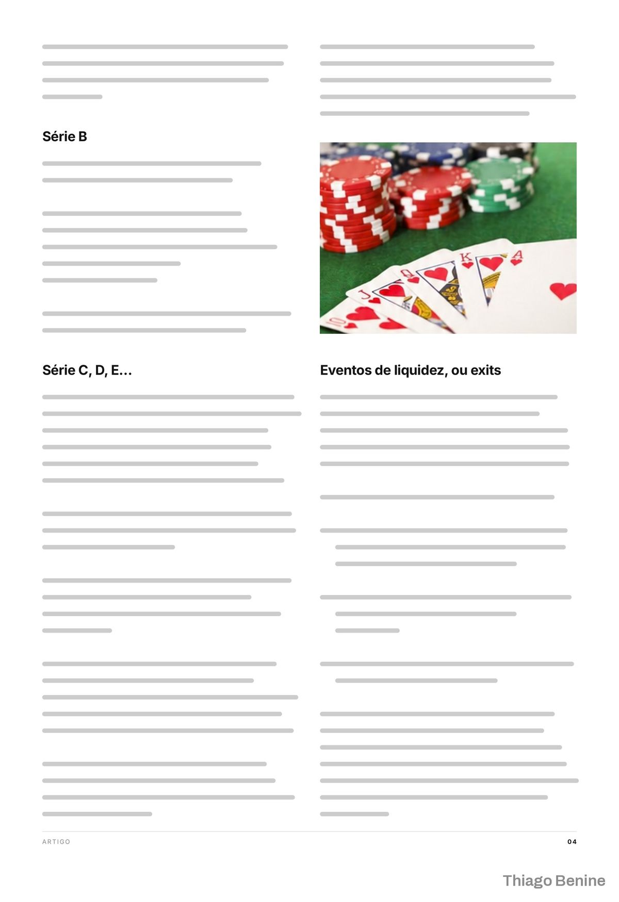
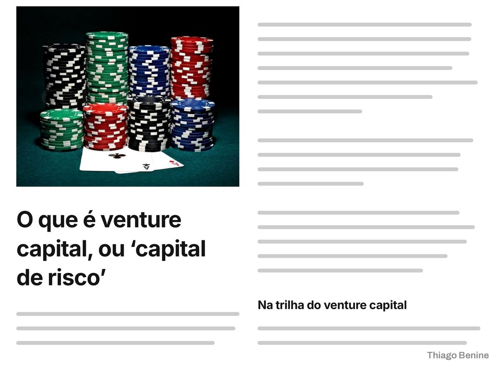

Portfólio profissional de 7 páginas em PDF
Acabamento e diagramação de um portfólio de redação, com antes e depois página a página.



Sobre o projeto
Um redator tinha o portfólio pronto em conteúdo, mas sem acabamento visual. As 7 páginas foram diagramadas com hierarquia clara, ritmo de leitura e padrão visual único, e entregues em PDF. O portfólio passou a apresentar o trabalho com cara profissional.
O que foi entregue
- 7 páginas diagramadas
- PDF final
- Comparativo de antes e depois
Avaliação do cliente
5,0 de 5
Profissional excepcional